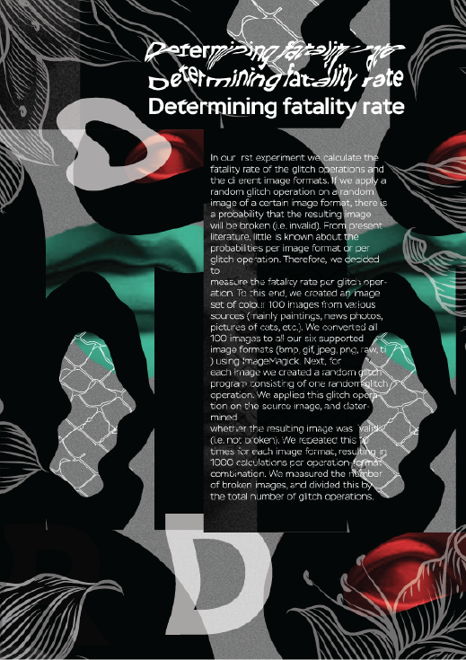

About Design
We've done a lot of different projects together today, and we're still doing it. We were born and live in Eastern Europe. Our projects are different but they are always connected by the same visual effects, which you can read further. In our works we mainly show the visual effects of modern art and we want to create new unique visual effects in our own projects. This site is designed to make it easier for people to contact us, and we would like all our projects to be in one place and look like one whole.

Video Production
We do video regardless of the difficulty. We have experience in video recording, editing and also with everything that is related to video. There are professional cameras, stabilizers and drones to our disposition, thanks to all this we can do professional video. We hope you are interested and will go into the portfolio to see our video
67° 38.284' 0" (N), 53° 0.4123' 0" (E)

In addition to establishing the digital (trace) index, glitches have also created new pop culture artifacts through the glitch aesthetic. At its most basic level, a glitch is the result of miscommunication from sender to receiver during the transcoding of information. Unexpected variations occur during the sending and/or receiving of information altering the intended informational product. These vicissitudes modify and delay the original informational product leaving behind a new, unintended, and unauthored artifact: the glitch.
About us
Some of our work is posted on this site, but you can see all the work in our portfolio on Behance (the link is at the bottom). We have started doing this kind of work once in college. We like doing such projects because in them you can show your thinking and your skills in making projects. We do it mainly for ourselves to show people that design can also look like art.
We mainly use visual effects such as glitch or datamosh, databend and so on. Glitch art and evolutionary art share a number of similarities. Both employ a sort of "generate and test" paradigm, whereby a software program generates a number of possibilities, and a selection is performed by an artist or by a software component. Manon et al, that can not create an image glitch,
one can even trigger the glitch, and this volatile nature pseudo-aleatoric art form. Applying a glitch operation to an image is very simple, but creating interesting visual content is far from trivial. As Manon et al state \ Glitch art is like photography; it's easy to do, but it's hard to do well. "Although nding interesting visual content using Glitch is di? cult, it is by no means a random process. Applying the same glitch operations on the same image will result in the same end image. In our EvoArt system we support six image le types for Glitch art; Windows Bitmap (bmp), gif, jpeg, raw...